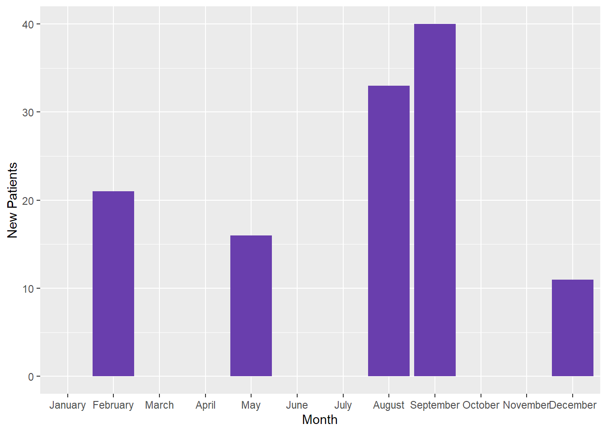

A guide on ordering month “categories” chronologically and dealing with missing month data on a ggplot using Tidyverse packages and base R constants. This guide assumes that you understand how to load data into R, work with vectors, and are somewhat familiar with subsetting and ggplot2.
data manipulation
data carpentry
data visualization
r
statistical programming
ggplot
r walkthrough
Author
Meghan Harris
Published
January 23, 2021
The Problems:1) You need to order your “Month” categories chronologically on a ggplot but they keep plotting alphabetically.
2) You don’t have data for all 12 months of the year, but want to have every month of the year plotted on your graph.
The First Example:
Here we have simple aggregated data for total new patients enrolled in a clinic during the year. The dataset might look like this:
The “Patients” Example Data
For those of you who are just starting out in ggplot and have managed to plot your first graphs, you may have realized that ggplot doesn’t always display your categorical data as you see it in your view pane. Often times, ggplot will plot categorical variables in alphabetical order. This happens because the categorical variable you are trying to graph (“Month”) is not set as an ordered factor. In R, factors are categorical variables that have values assigned to them. To learn a bit more about factors, I highly recommend referring to chapter 15 (Factors) in Wickham and Grolemund’sbook R For Data Science.
If you’d like to follow along within the R project files you can download them from the Tidy Trekker Github Repository. Be sure to fully extract the ZIP. folders for proper access. You can also download the data set used and load it into your own session for practice by clicking the GitHub button below:
For this example, we’ll use the readr, dplyr, tidyr, and ggplot2tidyverse packages to load in our data, do some wrangling, and get it visualized on to a graph. We’ll load in our libraries and our first dataset named Patients.
# Loading in the appropriate libraries===library(readr)
Warning: package 'readr' was built under R version 4.1.3
library(dplyr)
Warning: package 'dplyr' was built under R version 4.1.3
Attaching package: 'dplyr'
The following objects are masked from 'package:stats':
filter, lag
The following objects are masked from 'package:base':
intersect, setdiff, setequal, union
library(tidyr)
Warning: package 'tidyr' was built under R version 4.1.3
library(ggplot2)
Warning: package 'ggplot2' was built under R version 4.1.3
# Loading the data into the environment===Patients <-read_csv("data/Patients.csv")
Rows: 5 Columns: 2
-- Column specification --------------------------------------------------------
Delimiter: ","
chr (1): Month
dbl (1): New Patients
i Use `spec()` to retrieve the full column specification for this data.
i Specify the column types or set `show_col_types = FALSE` to quiet this message.
Pay attention to the file path in the read_csv function. If you copy and paste that command and are not using the project files within the Github link above, you will get an error!
Plotting Your Data:
So we have our data in, and we decide we want to make a simple bar chart of these counts. We’ll use a basic ggplot framework to do this. We’ll call the resulting plot Patientgraph. If you’re rusty or just learning ggplot, I highly recommend downloading the ggplot cheat sheet to get up to speed!
# Making a ggplot with the data "as-is"====Patientgraph <-ggplot(Patients, aes(x = Month, y =`New Patients`)) +geom_bar(stat ="identity", fill ="#693ead")# Let's view the graph===Patientgraph
We can see that we’ve got our data onto the graph, but the Month categories are displayed alphabetically. This may be fine in some cases, but usually we expect to see months listed chronologically (January - December).
We can already see from the graph and dataset that we have 5 distinct months to work with. We can confirm this by asking R to show us the unique values for the Month variable. We should also take the time to identify the Month variable’s class. (Data Type)
# Viewing the unique values in the "Month" variable===unique(Patients$Month)
# Identifying the class of the "Month" variable===class(Patients$Month)
[1] "character"
Refactoring Your Data for Plotting:
As I mentioned earlier, in order to adjust these categories on a ggplot, we need to change the variable type, or it’s class, into a factor. Let’s make this change and save the results into a new dataset called “Patients2.”
Using the pipe operator%>% with the dplyr verb mutate, we can alter the existing Month variable into a factor using base R’s “factor” function. In this function, you simply tell R which variable you want to convert and then pass a “levels” argument. This argument manually dictates the order in which categories will be seen on the ggplot. Note that because we are using the pipe operator, we do not need to do a direct subset to this variable in the factor function. ex: (Patients$Month)
Although cumbersome, manually setting your factor levels may be required from time to time. Make sure capitalization, spelling, and punctuation match what’s in your data set exactly. Even having whitespace in your data can cause issues. You can tackle whitespace issues with Stringr’s str_trim function.
Now let’s replot the graph with the Patients2 data.
Now this is more like it! Now I did say that this method was cumbersome. Thankfully, there are ways to cut some of this work down. We’ll do this by using some constants in R.
The “month.name” Constant for Easier Refactoring:
If you don’t know about constants, you can read about them here! They are basically preset values that come in base R. We can use the month.name constant in this particular example. Let’s look at it first though to get familiar.
# Printing out the month.name constant to take a look at it===month.name
We can see all the months are here in this constant ready for us to use! So how do we apply this to help us out with our coding? By calling on the month.name constant for our levels argument when factoring! Recall that we have five months in our dataset. In order to use the “month.names” constant, it has to only contain those five months (Remember that the levels have to match exactly.) We do this by subsetting out only the months we need. We’ll do this and store the results into a dataset called “Patients3” with the following code:
You may see that our code looks similar to the last factoring we did. The only thing that has changed is the addition of what’s passed into the levels argument:
month.name[month.name %in%unique(Month)]
The code above tells R to “look” within the “month.name” constant and only return the values that are also uniquely in (%in%) our “Month” variable. If needed, you can learn more about R’s operators like %in%here. If we plot Patients3, we can see the result is the same as the original refactored graph we made.
Patients3
# A tibble: 5 x 2
Month `New Patients`
<fct> <dbl>
1 February 21
2 May 16
3 August 33
4 September 40
5 December 11
The only difference here is not having to do the cumbersome coding of spelling out our months in our factor function.
When All Months Are Present in Your Dataset:
So what if we have a dataset with all the months accounted for in the year? We can do less work! Let’s load in our Patients_complete dataset to take a look.
# Loading in the "complete" Patients datasetPatients_complete <-read_csv("data/Patients_complete.csv")
Rows: 12 Columns: 2
-- Column specification --------------------------------------------------------
Delimiter: ","
chr (1): Month
dbl (1): New Patients
i Use `spec()` to retrieve the full column specification for this data.
i Specify the column types or set `show_col_types = FALSE` to quiet this message.
Pay attention to the file path in the read_csv function. If you copy and paste that command and are not using the project files within the Github link above, you will get an error!
The “Patients Complete” Example Data
So you might’ve guessed that this dataset would also return a graph in which the months are ordered alphabetically. We’ll make a quick one and store it in Patientgraph4.
# Confirming assumptions with the "Patients_complete" dataset=== Patientgraph4 <-ggplot(Patients_complete, aes(x = Month, y =`New Patients`)) +geom_bar(stat ="identity", fill="#693ead")# Viewing it==Patientgraph4
This time, because we have all of the months in the dataset, the code for refactoring can be simplified. We’ll store it in a dataset called Patients4 then graph it in a ggplot called Patientgraph5.
# Easier refactoring when all months are present ===Patients4 <- Patients_complete %>%mutate(Month =factor(Month, levels = month.name))# Creating the plot ===Patientgraph5 <-ggplot(Patients4, aes(x = Month, y =`New Patients`))+geom_bar(stat ="identity", fill="#693ead")# Viewing it ===Patientgraph5
When You Want to Fill in Missing Months on a Plot:
The Second Example:
Finally, let’s go back to our original Patients dataset. What do you do if you don’t have all the months of the year, but you want to plot all of the months? To do this, we need to create “placeholder” data points within our dataset. We do this by adding the months we are missing to our dataset and assigning them a numeric value of 0. We’ll do this and store it into a final dataset called Patients_modified. Be sure to remember to refactor this as well!
# Adding missing months to our "Patients" data set=== Patients_modified <-left_join(tibble("Month"= month.name),Patients, by ="Month") #Replacing coerced NAs from the previous code to a numeric 0 then refactoring our new dataset===Patients_modified <- Patients_modified %>%mutate(`New Patients`=ifelse(is.na(`New Patients`),0,`New Patients`)) %>%mutate(Month =factor(Month, levels = month.name))
Essentially what we’ve done is transformed our vector of month.name constants into a data frame, or tibble. Doing this allows us to complete a left join and merge all of the “Month” names in the constant into our dataset. The first mutate function uses the ifelse function to replace all the NAs of this merge with numeric values of 0. The second mutate function is just the refactoring method that was previously introduced. Let’s create the graph, call it Patientgraph6, and view it.
# Creating the final plot===Patientgraph6 <-ggplot(Patients_modified, aes(x = Month, y =`New Patients`)) +geom_bar(stat ="identity", fill="#693ead") #And view it===Patientgraph6

And there we are! All of our data is plotted and we can see all of the months in the year! You’ll notice those pesky month labels may be colliding with each other. This may vary based on the machine/browser window you’re working with. If you need to fix cases like these, I’d recommend the str_wrap() function from the stringr package.
Have any thoughts or suggestions? Know of a better solution or way to make this process more efficient? Feel free to leave a comment below to share or contact me directly! Respectful discourse towards efficient solutions or new insights is always welcomed!